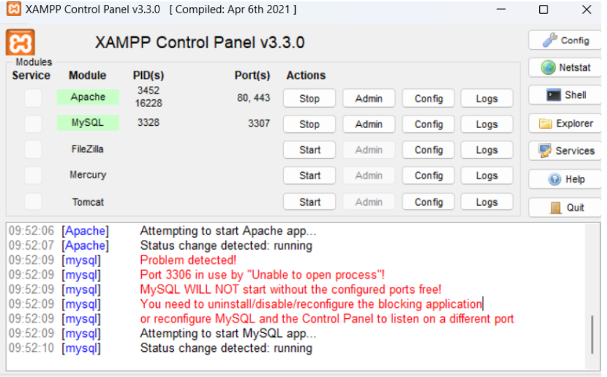
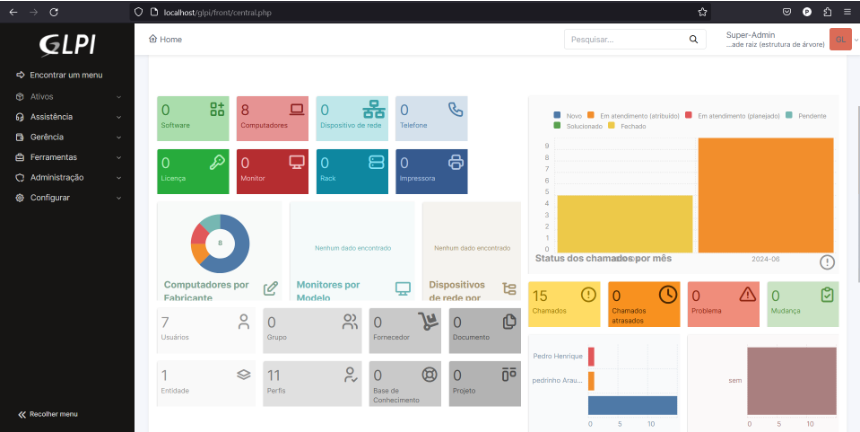

GLPI
O GLPI (Gestionnaire Libre de Parc Informatique) é um software open source de gestão de recursos de TI e help desk. Desenvolvido pela empresa francesa Teclib', o GLPI é amplamente utilizado por organizações de todos os tamanhos para gerenciar seus ativos de TI, lidar com tickets de suporte, e manter registros detalhados de infraestrutura.
Instação do GLPI
- XAMPP: O XAMPP é um pacote com os principais servidores do mercado de código aberto do mercado.
- VirtualBox: VirtualBox é um software de virtualização visa criar ambientes para instalação de sistemas distintos.
Minha Instalação
Eu instalei o GLPI utilizando o XAMPP, pois era uma das maneiras menos problemáticas e mais fáceis para se utilizar.
Primeiro Passo
- Ir para a página de download do XAMPP.
- Escolher a opção de download que corresponde ao seu Sistema Operacional, no meu caso eu usei windows.

Segundo Passo
- Baixar a versão LTS do GLPI-downloads diretamente do site deles.
Terceiro Passo
- É necessário extrair a pasta do GLPI do arquivo que foi baixado no passo anterior.
Quarto Passo
- Agora com os arquivos extraidos do GLPI, recorte a pasta desses arquivos e vá até o diretório onde se encontra o XAMPP, entrando no diretório da pasta XAMPP, procure pela pasta de nome htdocs e cole os arquivos que foram recortados da pasta do GLPI.
- A partir de agora é possível utilizar todas as funcionalidades do GLPI.
Quinto Passo
- Agora com o GLPI funcionando, abra o software XAMPP e inicie o Apache e MySQL, abaixo segue a imagem: 
- Onde está escrito STOP, começa com START,são esses dois primeiros itens que devem ser ativados.
Sexto Passo
- Com o Apache e MySQL funcionando, agora temos tudo para começar a usar o GLPI.
- Vá para o seu navegador e digite na barra de navegação
localhost://glpi.
Sétimo Passo
- Agora basta configurar o que falta no seu sistema GLPI.
- A primeira configuração é ativar a extensão gd.
- A segunda configuração é ativar a extensão itil.
- Feito isso, as configurações estão finalizadas.
Oitavo Passo
- Criar uma conexão do banco de dados com o GLPI para armazenar as informações que serão salvas a partir do GLPI.
- Ele irá pedir o endereço do servidor e o usuário SQL, basta preencher com
endereço = localhoste usuário SQLroot, a senha não é necessária.
Nono Passo
- Aparecerão mais 2 pop-ups para serem respondidos, basta clicar em continuar nos dois e pronto, seu GLPI estará funcionando perfeitamente para usar, a imagem que deve aparecer é a seguinte: 